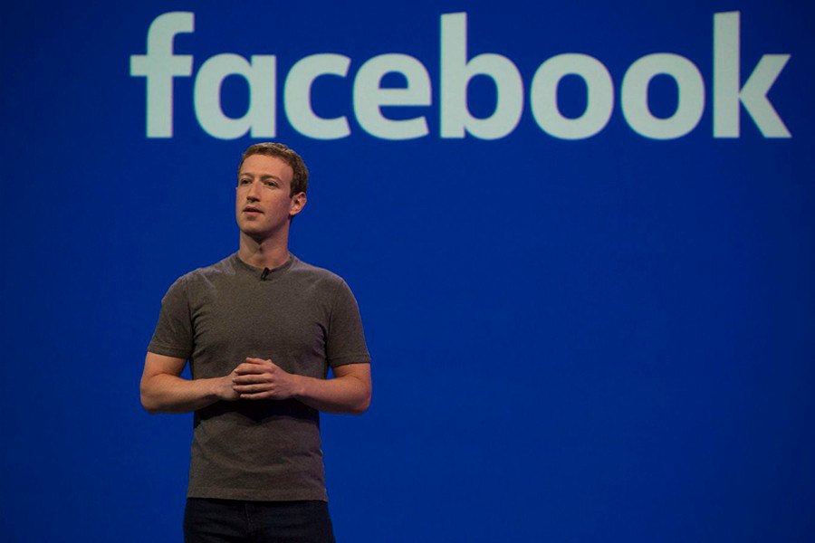

Se puede acceder a Facebook desde una amplia gama de dispositivos con conexión a Internet, como Computadora personal (PC), portátiles, tabletas y teléfonos inteligentes. Una vez registrados, los usuarios pueden crear un perfil personalizado que indique su nombre, ocupación, escuelas atendidas, etc. Los usuarios pueden agregar a otros usuarios como «amigos», intercambiar mensajes, publicar actualizaciones de estado, compartir fotos, vídeos y enlaces, usar varias aplicaciones de software (apps) y recibir notificaciones de la actividad de otros usuarios. Además, los usuarios pueden unirse a grupos de usuarios de interés común organizados por lugar de trabajo, escuela, pasatiempos u otros temas, y categorizar a sus amigos en listas como «Personas del trabajo» o «Amigos cercanos». También proporciona opciones para reportar o bloquear a personas desagradables o amistades no deseadas. Facebook cuenta con más de 2.700 millones de usuarios activos mensuales a fecha de marzo de 2018. Su popularidad ha supuesto a una ingente cobertura mediática de la compañía, como un escrutinio significativo sobre la privacidad y los efectos psicológicos que tiene en los usuarios. En los últimos años, la compañía se ha enfrentado con una intensa presión sobre la cantidad de fake news, la incitación al odio y las representaciones de violencia que prevalecen en sus servicios, aspectos que está intentando contrarrestar.
Un reciente estudio sobre el acceso de los usuarios a las redes sociales asegura que el 90 % de los jóvenes Millennials acceden al menos una vez al día a Facebook y que el 50 % hace uso de WhatsApp como medio para comunicarse. Además compara el tráfico de usuarios en la región y revela que Argentina es en el país donde acceden con mayor frecuencia.
Los datos de Facebook se utilizan para diferentes investigaciones científicas. Un estudio examinó cómo los usuarios de Facebook interactúan con las noticias compartidas socialmente y muestran que las elecciones de los individuos desempeñaron un papel más importante en la limitación de la exposición al contenido transversal. Otro estudio encontró que la mayoría de los estudiantes de ciencias de la salud adquirieron materiales académicos de otros a través de Facebook.
La red permite enviar mensajes de texto plano de corta longitud, con un máximo de 280 caracteres (originalmente 140), llamados tuits o tweets, que se muestran en la página principal del usuario. Los usuarios pueden suscribirse a los tweets de otros usuarios –a esto se le llama seguir y a los usuarios abonados se les llama seguidores. Por defecto, los mensajes son públicos, pudiendo difundirse privadamente mostrándose únicamente a unos seguidores determinados. Los usuarios pueden twitear desde la web del servicio, con aplicaciones oficiales externas (como para teléfonos inteligentes), o mediante el Servicio de mensajes cortos (SMS) disponible en ciertos países. Si bien el servicio es gratis, acceder a él vía SMS comporta soportar tarifas fijadas por el proveedor de telefonía móvil.
Twitter ha sido usada para una variedad de propósitos en diferentes industrias y situaciones. Por ejemplo, fue usada para organizar protestas, a veces referidas como «Twitter Revolutions», entre las que se encuentran la revolución egipcia de 2011, la revolución tunecina, las protestas electorales en Irán de 2009 y las protestas antigubernamentales en Moldavia de 2009. Los gobiernos de Irán y Egipto bloquearon el servicio como represalia.El servicio también se utilizó como una forma de desobediencia civil: en 2010, los usuarios quedaron indignados por el Twitter Joke Trial, donde Paul Chambers bromeaba con lanzar una bomba al aeropuerto Robin Hood Doncaster Sheffield, y en el debate británico privado en el mismo país un año después, donde varias celebridades que han tomado orden anónimas, más notablemente el jugador Ryan Giggs del Manchester United, donde fueron indentificados por miles de usuarios en protesta por el periodismo tradicional siendo censurado.